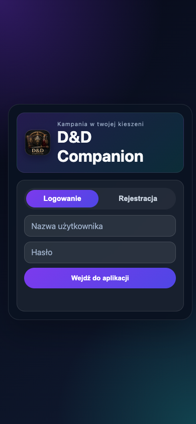

Dlaczego zacząłem
Podczas sesji ze znajomymi korzystaliśmy z papierowych kart postaci i zeszytów. Informacje się gubiły, część zapisów była nieczytelna, a przy wymianie zeszytu trzeba było przepisywać dane.
Telefon zwykle mamy przy sobie. Stworzyłem aplikację, która zbiera informacje potrzebne podczas gry w jednym miejscu: postać, ekwipunek, statystyki, notatki i kampanię.
Co jest zaimplementowane
- Tworzenie, edycja i usuwanie postaci ze statystykami i obliczeniami na podstawie wzorów.
- Ekwipunek z ilościami, opisami, kategoriami, kolejnością i szybkimi slotami.
- Notatki tekstowe i kartka do rysowania z powiększaniem oraz przesuwaniem.
- Prywatne wiadomości między użytkownikami będącymi znajomymi oraz powiadomienia.
- Uczestnictwo w kampanii z wybraną postacią oraz narzędzia DM i współ-DM.
Mój projekt i jego struktura
Stworzyłem D&D Companion wokół potrzeb naszych sesji RPG. Aktualny projekt obejmuje wspólnego klienta, API, migracje bazy danych i konfigurację wdrożenia.
Klient korzysta z JavaScript, Vite i Capacitor. Może być budowany jako PWA i w projektach natywnych. Osobny podgląd Expo służy do pracy deweloperskiej; nie jest klientem produkcyjnym.
Dane i uprawnienia
API Express przechowuje dane w PostgreSQL. Postać ma właściciela oraz elastyczne dane karty w JSONB. Uczestnictwo w kampanii wiąże użytkownika z wybraną dla niej postacią.
API sprawdza własność postaci. Zarządzanie kampanią jest ograniczone do właściciela lub współ-DM. Narzędzia DM obejmują podgląd uczestników i postaci, prywatne notatki oraz dodawanie przedmiotów. Uprawnienia są sprawdzane przez API, nie tylko przez ukrywanie przycisków.
Jeden klient, osobne API
PWA i klient mobilny komunikują się z API Node.js / Express. PostgreSQL przechowuje trwałe dane. Uwierzytelnianie wykorzystuje hasła haszowane bcrypt, tokeny dostępu i tokeny odświeżające.
Model relacyjny jawnie zapisuje własność i uczestnictwo, a JSONB obsługuje elastyczne dane postaci.
Wdrożenie i aktualny stan
PWA jest opublikowana na GitHub Pages, a publiczny ekran logowania jest dostępny. Aktualne repozytorium opisuje API i PostgreSQL na Render, a GitHub Releases zawiera pakiet Android.
Projekt pozostaje rozwijany. Pliki projektu iOS nie oznaczają wydania w App Store. Udostępniam link do PWA i repozytorium, bez deklaracji dostępności produkcyjnej ani liczby aktywnych graczy.